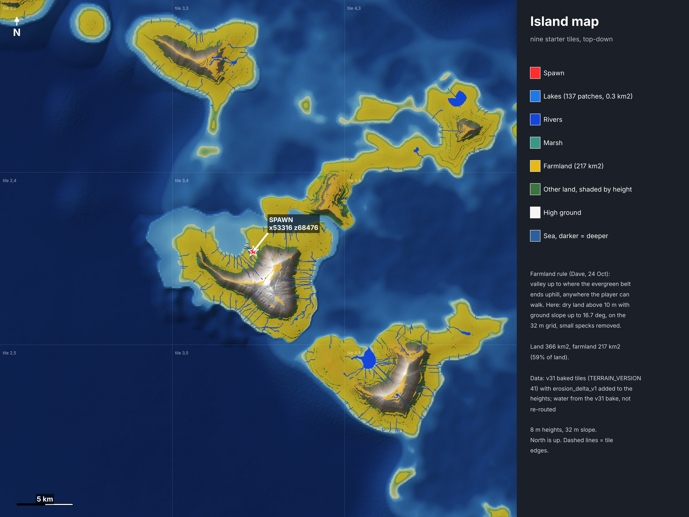

Top-down, nine starter tiles. Gold = farmland, blue = lakes and rivers, red star = spawn x53316 z68476. Tap the picture for full size.
Data: v31 baked tiles with the erosion carve added to the heights. Water is not re-routed. It will be redone from the new bake.
